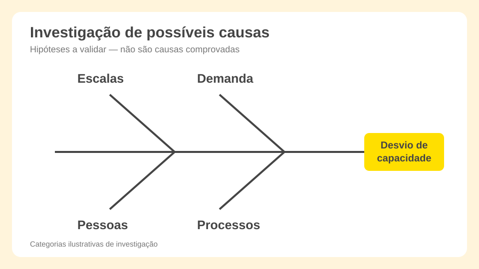

METODOLOGIA 02 · ESTUDO DEMONSTRATIVO
← Voltar ao estudoIshikawa: Análise de causa-raiz
Investigar possíveis causas dos desvios operacionais.

01 O que é?
Ferramenta de análise que organiza possíveis causas de um problema, facilitando a investigação de fatores que impactam os resultados operacionais.
02 Por que utilizar?
Investigar fatores que provocam desvios de capacidade, produtividade e dimensionamento, evitando decisões baseadas apenas nos sintomas.
03 Como aplicar?
Mapear possíveis causas relacionadas a escalas, pessoas, processos e sistemas, direcionando análises para identificar a origem dos desvios operacionais.